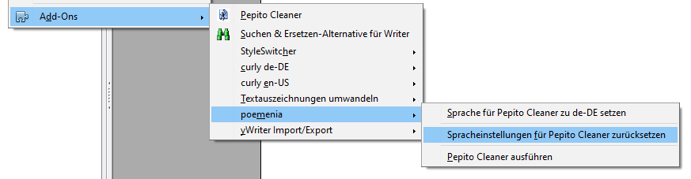

Projekt-Homepage > Anwendungshinweise
Achten Sie unbedingt darauf, dass das Programmfenster von Pepito Cleaner geschlossen ist!
Hauptmenü: Extras > Add-Ons > poemenia > Sprache für Pepito Cleaner zu de-DE setzen

Damit wird die Benutzeroberfläche deutschsprachig. Außerdem berücksichtigt Pepito Cleaner deutsche Interpunktionsregeln und erkennt Anführungszeichen, die in Deutschland und Österreich üblich sind. Es sind Gänsefüßchen („…“) oder Chevrons (»…«) möglich.
Die Konfiguration der Suchmuster wird gesichert und durch die Konfiguration von poemenia ersetzt.
Nach erfolgreicher Beendigung erscheint eine Meldung.

Hauptmenü: Extras > Add-Ons > poemenia > Spracheinstellungen für Pepito Cleaner zurücksetzen

Damit wird die Benutzeroberfläche auf die zuvor eingestellte Sprache gesetzt. Die zuvor konfigurierten “regex”-Suchmuster werden wiederhergestellt.
Nach erfolgreicher Beendigung erscheint eine Meldung.

Hauptmenü: Extras > Add-Ons > poemenia > Pepito Cleaner ausführen

Damit kann man Pepito Cleaner auch starten.
Hauptmenü: Hilfe > poemenia Hilfe

Im Hilfe -Menü gibt es ein poemenia Hilfe -Untermenü.